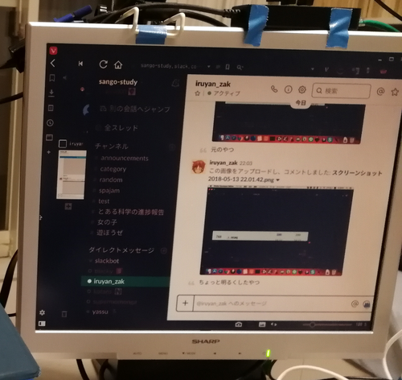
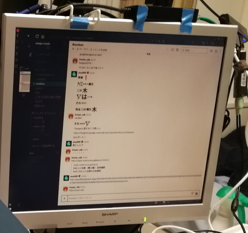

Xorg環境でディスプレイの解像度ではなく表示倍率を変える--scale
Before

After

問題
上記 ‘Before’ のように、 解像度の低いディスプレイでvivaldiのサイドタブを使っていると、 ページの表示に使える領域が非常に狭くなる。
もちろん解像度が低いので仕方ないのだけど、 同じディスプレイをWindows10またはmacOS HighSierraにつなぐと、 なんと見た目上は使える領域を広くしてくれる （表示倍率を自動調節してくれる）。
Xorgはすごいので、Linuxディストロでもできるだろうと思って調べた。
解決
# --scaleを見て欲しい
$ xrandr --output DP-1 --mode 1280x1024 --pos 2160x0 --scale 1.6x1.6これでWindowsやmacOSのように、 表示倍率を変えることができた。 （上記 ‘After’ と ‘Before’ を見てもらえれば思う）
解像度が変わったわけではないので文字が若干荒く表示されるので ターミナルエミュレータを表示させておくのは厳しいが、 ブラウザや画像などを見る程度なら快適である。
この記事はこちらから修正リクエストを送ることができます。
Xorg環境でディスプレイの解像度ではなく表示倍率を変える--scale - github
ゴミ箱ボタンの左にある、鉛筆ボタンを押してね！